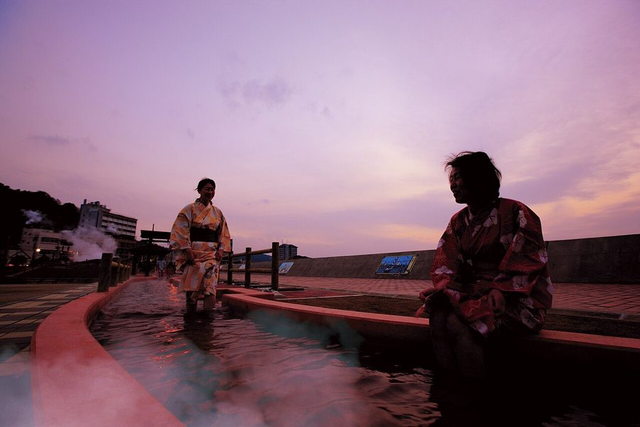
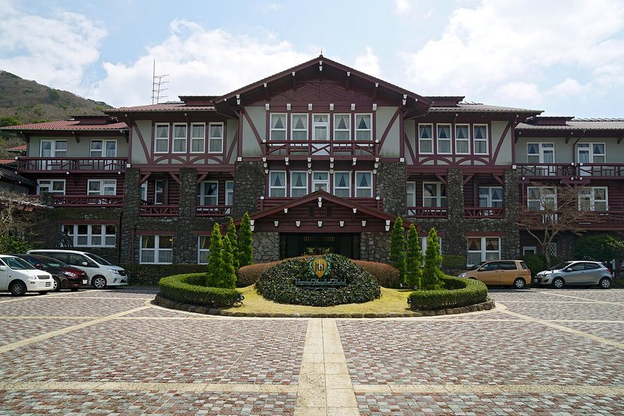
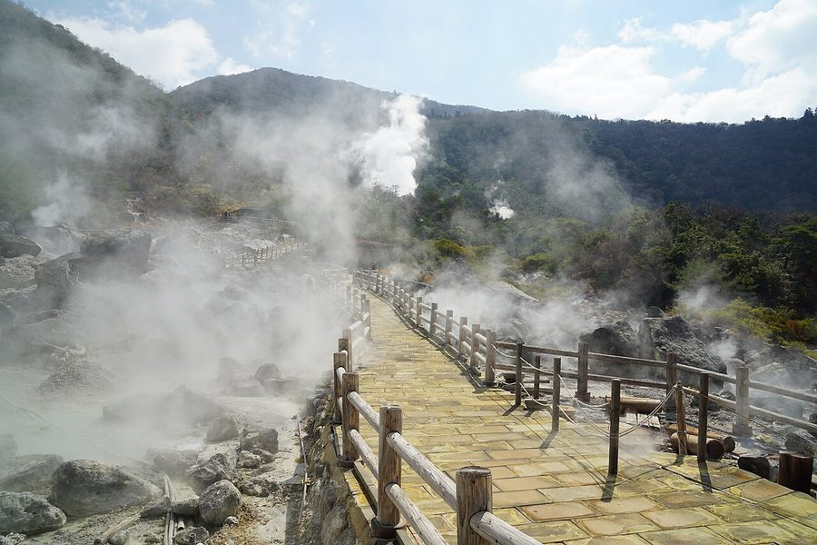
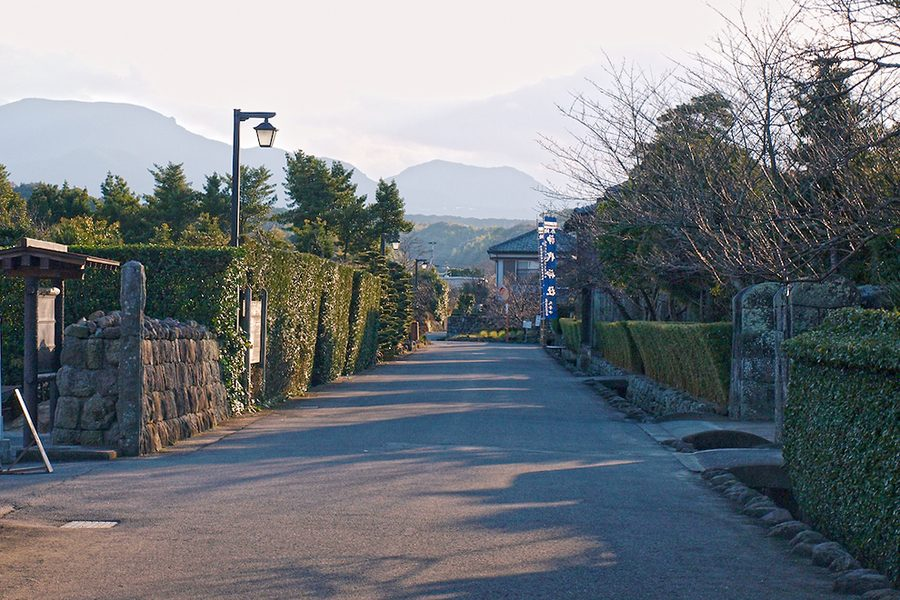

長崎県雲仙市の日帰り温泉・銭湯・サウナ（34件）
寄り道スポット検索アプリ「ヨッテコ」の収録データから、長崎県雲仙市の日帰り温泉・銭湯・サウナを営業時間・料金つきで一覧にしました（2026年8月時点）。
最も安いのは市営温泉 浜の湯（150円）。最も遅くまで入れるのは大江戸温泉物語 雲仙東洋館（24:00まで）。朝風呂ならゆやど 雲仙新湯（6:00開店）。
長崎県雲仙市はどんなまち？
数字で見る🔍長崎県雲仙市
まちの横顔




- 地形と位置: 雲仙市は、長崎県の島原半島西部に位置する市です。東隣の島原市にまたがって雲仙岳がそびえます。西は諫早市、東は島原市および南島原市と市境を接し、南西岸は橘湾を挟んで長崎市と向かい合います。北岸は有明海の一部である諫早湾に面し、対岸には佐賀県南部、福岡県筑後地方、熊本県北西部が広がります。
寄り道充実度（全国偏差値）
偏差値・順位は、ヨッテコ収録データ（2026年8月時点・26,033件）を市区町村別に集計した施設数の全国分布（1,728市区町村）から毎回算出しています。カードを押すとカテゴリ別の分析に切り替わります。
日帰り温泉から見た長崎県雲仙市
市内の日帰り温泉は34件、全国57位タイ（上位3.3%）。——数のうえでは、はっきり湯の多いまち。
- 97%の店が天然温泉です。全国水準は67%です。沸かし湯ではなく源泉が前提で、温泉そのものがまちの資源になっています。
- サウナを備える店は29%。全国水準（52%）より控えめです。主役はあくまで湯船、という構成でしょうか。
- 21時を過ぎて入れる店は29%。全国水準（40%）より少なめです。夜の選択肢は限られるので、閉店時刻は先に見ておきたいところです。
- 入浴料（判明28件）の中央値は550円。全国（650円）より15%安めです。気軽に立ち寄れる金額に収まっています。
出典: 施設データ=ヨッテコ収録データ（26,033件・2026年8月時点）。偏差値・全国順位・全国水準は全1,728市区町村の分布から毎回算出。 / 人口=総務省「住民基本台帳に基づく人口、人口動態及び世帯数」（2026年1月1日現在） / 面積=国土地理院「全国都道府県市区町村別面積調」（2026年4月1日時点） / 森林率=農林水産省「2025年農林業センサス（農山村地域調査）」市区町村別林野率（2025年、林野率（林野面積÷総土地面積）） / 年平均気温=気象庁「平年値（1991-2020年）」。市区町村の代表点（国土交通省「大字・町丁目レベル位置参照情報」）から最も近い観測点の値 / まちの解説=日本語版Wikipedia「雲仙市」（https://ja.wikipedia.org/wiki/雲仙市、2026年8月21日取得）に基づき作成（CC BY-SA 4.0） / 写真=Wikimedia Commons（各キャプションに作者・ライセンスを記載）
曜日別の営業施設数
| 月 | 火 | 水 | 木 | 金 | 土 | 日 |
|---|---|---|---|---|---|---|
| 34 | 32 | 31 | 33 | 34 | 34 | 34 |
水曜日が最も休みが多く（各3件が定休）、年中無休は28件です。※営業時間データのある34件で集計
入浴料金の分布（大人）
| 500円以下 | 13件 | |
| 501〜800円 | 5件 | |
| 801〜1,200円 | 4件 | |
| 1,201円以上 | 6件 |
料金が確認できた28件で集計。
施設一覧
| 施設 | 営業時間 | 料金（大人） |
|---|---|---|
| Rest House 森のしらべ 天然温泉露天風呂サウナ | 11:00〜18:30 | 1,000円 |
| ちょこっとよかゆ 天然温泉 自家源泉100パーセントかけ流しの日帰り温泉。酸性泉（pH2.3）を新鮮なまま堪能できるのが特徴。男女別浴場と2つの家族… | 10:00〜20:00（水休） | 550円 |
| みずほ温泉 千年の湯 天然温泉露天風呂サウナ 雲仙市営の温泉施設で、ジャグジーや打たせ湯、露天風呂を備えた大浴場が特徴。駐車場も完備しており、気軽に立ち寄れる日帰り施… | 10:00〜21:00 | 500円 |
| むつみの宿 旅館 和多屋 天然温泉 | 10:00〜21:00 | 500円 |
| ゆやど 雲仙新湯 天然温泉露天風呂 ゆやど雲仙新湯。4本の自家源泉を持つ料理宿。泉質が異なる源泉を浴場ごとに使用。源泉掛け流しで硫黄の香りが特徴。 | 15:00〜24:00 ※曜日により異なる | — |
| グランピング COCOHARE（ココハレ） 天然温泉 小浜温泉の源泉を一棟一棟で汲み上げるグランピング施設。温泉で心身をリフレッシュ。 | 12:00〜24:00 | 2,000円 |
| 丸登屋旅館 天然温泉 | 10:00〜16:00 | 300円 |
| 味処湯処 よしちょう 天然温泉 小浜の温泉水を使った小浜ちゃんぽんで名高い食事処。お食事のお客様は温泉入浴が無料。 | 09:00〜22:30 | 400円 |
| 大江戸温泉物語 雲仙東洋館 天然温泉露天風呂サウナ | 07:00〜24:00 | 700円 |
| 天然温泉 雲仙よか湯 天然温泉露天風呂 雲仙温泉の源泉100％かけ流しで楽しめる日帰り温泉。PH2.3の酸性単純硫黄温泉で、呼吸器疾患や皮膚病に特に効果が期待で… | 10:00〜21:00（木休） | 1,400円 |
| 小浜温泉 旅館 國崎 天然温泉露天風呂 | 12:00〜20:00 | 1,000円 |
| 小浜温泉 旅館ゆのか 天然温泉露天風呂 小浜温泉 旅館ゆのか。源泉温度105度で日本一の熱量を誇る古湯。「温まりの湯」として知られるナトリウム塩化物泉。 | 15:00〜21:00 | 500円 |
| 小浜温泉 旅館山田屋 天然温泉露天風呂 | 15:00〜20:00 | 500円 |
| 小浜温泉 望洋荘 天然温泉露天風呂 小浜温泉の源泉を使用した望洋荘。高い天井で広々とした大浴場と露天風呂を備え、男女それぞれにジェットバスと落差4mの打たせ… | 07:30〜22:00 | 550円 |
| 小浜温泉 福徳屋旅館 天然温泉露天風呂 | 12:00〜19:00 | 2,000円 |
| 小浜荘 天然温泉露天風呂 | 10:00〜16:00 | — |
| 市営温泉 浜の湯 天然温泉 小浜温泉街の入り口に位置する市営の共同浴場。地元の人たちとのふれあいが魅力。 | 06:00〜22:00 | 150円 |
| 海を見渡す個室露天の宿 伊勢屋 天然温泉 | 10:00〜19:00 | 1,000円 |
| 海上露天風呂 波の湯「茜」 天然温泉露天風呂 小浜温泉の小浜町マリーナに位置する海上露天風呂。満潮時には海面との差がわずか20cm程度となり、海と一体化した感覚で極上… | 10:00〜23:00 | 3,000円 |
| 海辺の宿 つたや旅館 天然温泉露天風呂サウナ | 11:00〜21:00 | — |
| 湯の里温泉共同浴場 だんきゅう風呂 天然温泉 1653年に始まり雲仙で最も歴史のある共同浴場。かつてらっきょう漬けの樽を浴槽として使ったことから「だんきゅう風呂」の愛… | 09:00〜22:00（火休） | 200円 |
| 湯宿 蒸気家 天然温泉 | 09:00〜21:00 | 500円 |
| 脇浜温泉浴場 おたっしゃん湯 天然温泉 小浜温泉にある昔ながらの共同浴場。昭和12年創業で、地元の方に長年愛され続けている。 | 06:00〜21:00 | 200円 |
| 蒸気サウナ付き貸切風呂 YUASOBI 天然温泉サウナ | 10:00〜23:00 | 3,000円 |
| 遊学の里くにみ 遊学の館 サウナ | 10:00〜21:00（火休） | 300円 |
| 雲仙 福田屋 天然温泉露天風呂サウナ 雲仙福田屋。源泉掛け流しの雲仙温泉。pH2.4の酸性単純硫黄泉で、にごり湯のきりっとした温泉。デトックスと美肌効果が期待… | 12:00〜15:00 | 1,500円 |
| 雲仙スカイホテル 天然温泉露天風呂 | 11:00〜21:00 | — |
| 雲仙小浜温泉 寿楽〜JURAKU〜 天然温泉サウナ 小浜温泉の最高台に佇む海景観の宿。天然源泉かけ流しの露天風呂と貸切風呂で、心身ともにリラックス。 | 13:00〜21:00 | 700円 |
| 雲仙市 リフレッシュセンターおばま 天然温泉サウナ | 10:00〜21:00 | 700円 |
| 雲仙新湯温泉館 天然温泉 | 09:00〜22:00（水休） | 200円 |
| 雲仙温泉 小地獄温泉館 天然温泉 享保16年（1731年）に開湯した雲仙で最古の共同浴場。大正8年に開館、木造建築の秘湯気分が特徴。源泉直下からの白濁硫黄… | 09:30〜19:00（水休） | 500円 |
| 雲仙温泉 東園（あずまえん） 天然温泉露天風呂サウナ | 12:00〜15:00 | — |
| 雲仙温泉 雲仙いわき旅館 天然温泉露天風呂 | 12:00〜15:00 | — |
| 雲仙温泉 青雲荘 天然温泉露天風呂 雲仙温泉 青雲荘。国内でも数少ない源泉かけ流し。湯量豊富な乳白色の『美肌の湯』が特徴。 | 11:00〜18:00 | 880円 |